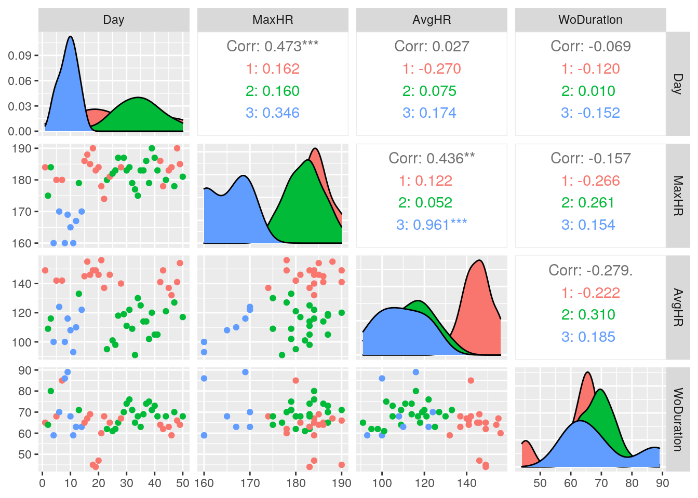

This project was a very interesting one and as such I thought loud and hard about what data I was going to use for it! I am quite passionate about health and fitness. The variables that I collected using MyFitnessPal are Calories, which is the number that I consumed each day and EnoughFiber which is whether or not I got the recommended amount of fiber for the day. The variables that I got from my workout tracker are MaxHR, which is my maximum heart rate, AvgHR, which is my average heart rate, and WoDuration which is the duration of my workout. I expect that there will be a positive correlation between AvgHR and MaxHR.
1 Datasets
library(tidyverse)
HeartRateStats <- read_csv("HeartRateStatsss.csv")
HR <- HeartRateStats
HR## # A tibble: 50 x 4
## Day MaxHR AvgHR WoDuration
## <dbl> <dbl> <dbl> <dbl>
## 1 1 184 149 65
## 2 2 175 109 64
## 3 3 184 116 80
## 4 4 160 100 59
## 5 5 180 142 68
## 6 6 170 124 70
## 7 7 180 142 85
## 8 8 160 100 86
## 9 9 169 116 89
## 10 10 165 108 68
## # … with 40 more rowsHeartRateStats## # A tibble: 50 x 4
## Day MaxHR AvgHR WoDuration
## <dbl> <dbl> <dbl> <dbl>
## 1 1 184 149 65
## 2 2 175 109 64
## 3 3 184 116 80
## 4 4 160 100 59
## 5 5 180 142 68
## 6 6 170 124 70
## 7 7 180 142 85
## 8 8 160 100 86
## 9 9 169 116 89
## 10 10 165 108 68
## # … with 40 more rowsMyFitnessPalStatsProject <- read_csv("MyFitnessPalStatsProject.csv")
HR## # A tibble: 50 x 4
## Day MaxHR AvgHR WoDuration
## <dbl> <dbl> <dbl> <dbl>
## 1 1 184 149 65
## 2 2 175 109 64
## 3 3 184 116 80
## 4 4 160 100 59
## 5 5 180 142 68
## 6 6 170 124 70
## 7 7 180 142 85
## 8 8 160 100 86
## 9 9 169 116 89
## 10 10 165 108 68
## # … with 40 more rowsHR %>% pivot_longer(cols = c("Day", "MaxHR", "AvgHR", "WoDuration"),
names_to = "varr", values_to = "value")## # A tibble: 200 x 2
## varr value
## <chr> <dbl>
## 1 Day 1
## 2 MaxHR 184
## 3 AvgHR 149
## 4 WoDuration 65
## 5 Day 2
## 6 MaxHR 175
## 7 AvgHR 109
## 8 WoDuration 64
## 9 Day 3
## 10 MaxHR 184
## # … with 190 more rowsI loaded in my datasets for my workout stats and food stats. My data was already tidy but I did use pivot_longer to demonstrate how that I can manipulate the data for my workout data accordingly.
bigboi <- full_join(HR, MyFitnessPalStatsProject, by = c("Day"))
bigboi## # A tibble: 50 x 6
## Day MaxHR AvgHR WoDuration Calories EnoughFiber
## <dbl> <dbl> <dbl> <dbl> <dbl> <chr>
## 1 1 184 149 65 1677 No
## 2 2 175 109 64 1683 No
## 3 3 184 116 80 1686 No
## 4 4 160 100 59 1684 No
## 5 5 180 142 68 1682 No
## 6 6 170 124 70 1068 No
## 7 7 180 142 85 1680 No
## 8 8 160 100 86 2250 Yes
## 9 9 169 116 89 1686 No
## 10 10 165 108 68 1689 No
## # … with 40 more rowsI did a full_join for this datasets and had no variables that were dropped from the dataset! I choose a full join because I did not want anything to be dropped.
bigboi %>% mutate(pulses = AvgHR * WoDuration)## # A tibble: 50 x 7
## Day MaxHR AvgHR WoDuration Calories EnoughFiber pulses
## <dbl> <dbl> <dbl> <dbl> <dbl> <chr> <dbl>
## 1 1 184 149 65 1677 No 9685
## 2 2 175 109 64 1683 No 6976
## 3 3 184 116 80 1686 No 9280
## 4 4 160 100 59 1684 No 5900
## 5 5 180 142 68 1682 No 9656
## 6 6 170 124 70 1068 No 8680
## 7 7 180 142 85 1680 No 12070
## 8 8 160 100 86 2250 Yes 8600
## 9 9 169 116 89 1686 No 10324
## 10 10 165 108 68 1689 No 7344
## # … with 40 more rowsbigboi %>% filter(EnoughFiber == "Yes") %>% arrange(Calories)## # A tibble: 5 x 6
## Day MaxHR AvgHR WoDuration Calories EnoughFiber
## <dbl> <dbl> <dbl> <dbl> <dbl> <chr>
## 1 50 181 117 68 1698 Yes
## 2 34 175 130 68 1900 Yes
## 3 26 183 98 62 2100 Yes
## 4 38 179 102 75 2200 Yes
## 5 8 160 100 86 2250 Yesbigboi %>% select(MaxHR, AvgHR, Calories)## # A tibble: 50 x 3
## MaxHR AvgHR Calories
## <dbl> <dbl> <dbl>
## 1 184 149 1677
## 2 175 109 1683
## 3 184 116 1686
## 4 160 100 1684
## 5 180 142 1682
## 6 170 124 1068
## 7 180 142 1680
## 8 160 100 2250
## 9 169 116 1686
## 10 165 108 1689
## # … with 40 more rowsbigboi %>% group_by(Day)## # A tibble: 50 x 6
## # Groups: Day [50]
## Day MaxHR AvgHR WoDuration Calories EnoughFiber
## <dbl> <dbl> <dbl> <dbl> <dbl> <chr>
## 1 1 184 149 65 1677 No
## 2 2 175 109 64 1683 No
## 3 3 184 116 80 1686 No
## 4 4 160 100 59 1684 No
## 5 5 180 142 68 1682 No
## 6 6 170 124 70 1068 No
## 7 7 180 142 85 1680 No
## 8 8 160 100 86 2250 Yes
## 9 9 169 116 89 1686 No
## 10 10 165 108 68 1689 No
## # … with 40 more rowsbigboi %>% summarise_all(mean)## # A tibble: 1 x 6
## Day MaxHR AvgHR WoDuration Calories EnoughFiber
## <dbl> <dbl> <dbl> <dbl> <dbl> <dbl>
## 1 25.5 180. 125. 66.8 1667. NAbigboi %>% summarise_all(sd)## # A tibble: 1 x 6
## Day MaxHR AvgHR WoDuration Calories EnoughFiber
## <dbl> <dbl> <dbl> <dbl> <dbl> <dbl>
## 1 14.6 7.64 18.8 8.55 175. NAbigboi %>% group_by(EnoughFiber) %>% summarize_all(mean)## # A tibble: 2 x 6
## EnoughFiber Day MaxHR AvgHR WoDuration Calories
## <chr> <dbl> <dbl> <dbl> <dbl> <dbl>
## 1 No 24.9 180. 126. 66.2 1627.
## 2 Yes 31.2 176. 109. 71.8 2030.bigboi %>% group_by(EnoughFiber) %>% summarize_all(sd)## # A tibble: 2 x 6
## EnoughFiber Day MaxHR AvgHR WoDuration Calories
## <chr> <dbl> <dbl> <dbl> <dbl> <dbl>
## 1 No 14.5 7.42 18.6 8.40 113.
## 2 Yes 15.6 9.21 13.7 9.18 229.bigboi %>% summarize_all(n_distinct)## # A tibble: 1 x 6
## Day MaxHR AvgHR WoDuration Calories EnoughFiber
## <int> <int> <int> <int> <int> <int>
## 1 50 20 36 24 37 2bigboi %>% summarize_all(max)## # A tibble: 1 x 6
## Day MaxHR AvgHR WoDuration Calories EnoughFiber
## <dbl> <dbl> <dbl> <dbl> <dbl> <chr>
## 1 50 190 156 89 2250 Yesbigboi %>% summarize_all(min)## # A tibble: 1 x 6
## Day MaxHR AvgHR WoDuration Calories EnoughFiber
## <dbl> <dbl> <dbl> <dbl> <dbl> <chr>
## 1 1 160 91 44 1068 Nocormut <- bigboi %>% select_if(is.numeric) %>% cor(use = "pair")
cormut## Day MaxHR AvgHR WoDuration Calories
## Day 1.00000000 0.4729713 0.02681194 -0.06910755 0.06520612
## MaxHR 0.47297134 1.0000000 0.43611917 -0.15715363 -0.11497974
## AvgHR 0.02681194 0.4361192 1.00000000 -0.27870889 -0.18054416
## WoDuration -0.06910755 -0.1571536 -0.27870889 1.00000000 0.14482734
## Calories 0.06520612 -0.1149797 -0.18054416 0.14482734 1.00000000tidycorr <- cormut %>% as.data.frame %>% rownames_to_column("var1") %>%
pivot_longer(-1, names_to = "var2", values_to = "correlation")
tidycorr## # A tibble: 25 x 3
## var1 var2 correlation
## <chr> <chr> <dbl>
## 1 Day Day 1
## 2 Day MaxHR 0.473
## 3 Day AvgHR 0.0268
## 4 Day WoDuration -0.0691
## 5 Day Calories 0.0652
## 6 MaxHR Day 0.473
## 7 MaxHR MaxHR 1
## 8 MaxHR AvgHR 0.436
## 9 MaxHR WoDuration -0.157
## 10 MaxHR Calories -0.115
## # … with 15 more rowsI used all six dplyrs in various forms. I made a new variable called pulses that represents number of heart beats during a workout. I also got the means and standard deviations of all the variables. I also calculated the means and standard deviations for each variables after grouping by fiber content. Last I made a correlation matrix. I mainly noticed that in the groups of EnoughFiber, the enough fiber group had much more calories than the not enough fiber. The other thing I noticed is that group with more fiber also had a longer mean workout duration.
tidycorr %>% ggplot(aes(var1, var2, fill = correlation)) + geom_tile() +
scale_fill_gradient2(low = "red", mid = "white", high = "blue") +
geom_text(aes(label = round(correlation, 2)), color = "black",
size = 4) + theme(axis.text.x = element_text(angle = 90,
hjust = 1)) + coord_fixed() + theme_gray()ggplot(bigboi, aes(x = AvgHR, y = MaxHR, color = EnoughFiber,
size = 2)) + theme(legend.position = "none") + ggtitle("MaxHR As A Function of AvgHR") +
ylab("MaxHR") + xlab("AvgHR") + geom_point() + theme_dark() +
scale_x_continuous(breaks = scales::pretty_breaks(n = 10)) +
scale_y_continuous(breaks = scales::pretty_breaks(n = 10))ggplot(bigboi, aes(x = WoDuration, y = Calories, color = "orange")) +
geom_bar(stat = "summary", fun = mean) + geom_errorbar(stat = "summary",
fun.data = mean_se) + ggtitle("Calories As A Function of Workout Duration") +
theme_gray()For the correlation heatmap, none of the variables have what is considered a strong relationship but interestingly the MaxHR and AvgHR have the greatest correlation of all the pairs that were looked at. The pair with the lowest was WoDuration and Calories. Moving on to the scatter plot, we see that there is a general appearance of a positive correlation between AvgHR and MaxHR but as noted with the correlation matrix, there is not truly a positive relationship here. Another thing to note is that the low fiber points are clustered more towards the lower part of the AvgHR when compared to the high fiber groups. Now for the last graph a big thing that jumped out at me is that there is quite a bit of spacing between the 60 minute and 76 minute mark. What this indicates that most of the workouts I did were around that time frame. Save for certain bars, the calories per minute are pretty consistent. I’d imagine it’s because I was in a bigger caloric deficit when I did my longer workouts.
library(cluster)
bigboi## # A tibble: 50 x 6
## Day MaxHR AvgHR WoDuration Calories EnoughFiber
## <dbl> <dbl> <dbl> <dbl> <dbl> <chr>
## 1 1 184 149 65 1677 No
## 2 2 175 109 64 1683 No
## 3 3 184 116 80 1686 No
## 4 4 160 100 59 1684 No
## 5 5 180 142 68 1682 No
## 6 6 170 124 70 1068 No
## 7 7 180 142 85 1680 No
## 8 8 160 100 86 2250 Yes
## 9 9 169 116 89 1686 No
## 10 10 165 108 68 1689 No
## # … with 40 more rowsclust_data <- bigboi %>% dplyr::select(AvgHR, MaxHR, WoDuration,
Calories) #Clustering on numeric Variables
sil_width <- vector() #empty vector to hold mean sil width
for (i in 2:10) {
kms <- kmeans(clust_data, centers = i) #compute k-means solution
sil <- silhouette(kms$cluster, dist(clust_data)) #get sil widths
sil_width[i] <- mean(sil[, 3]) #take averages (higher is better)
}
ggplot() + geom_line(aes(x = 1:10, y = sil_width)) + scale_x_continuous(name = "k",
breaks = 1:10)# This graph shows that we should use two clusters as the
# silhouette width at that point is greatest!
set.seed(348)
pam2 <- clust_data %>% scale %>% pam(k = 3)
pam2 #setting Clustering## Medoids:
## ID AvgHR MaxHR WoDuration Calories
## [1,] 1 1.2987891 0.5526972 -0.2058739 0.05453658
## [2,] 36 -0.5657564 0.4217263 0.2620213 -0.09981223
## [3,] 10 -0.8853927 -1.9357500 0.1450475 0.12313605
## Clustering vector:
## [1] 1 2 2 3 1 3 1 3 3 3 3 3 2 3 1 1 1 1 1 1 1 1 2 1 2 2 2 1 2 2 2 2 2 2 2 2 2 2
## [39] 2 2 2 1 1 2 1 1 2 1 1 2
## Objective function:
## build swap
## 1.298320 1.279484
##
## Available components:
## [1] "medoids" "id.med" "clustering" "objective" "isolation"
## [6] "clusinfo" "silinfo" "diss" "call" "data"yeetclust <- clust_data %>% mutate(cluster = as.factor(pam2$clustering)) #saving so it can be plotted
yeetclust %>% group_by(cluster) %>% summarise_if(is.numeric,
mean, na.rm = T) #Means for clusters## # A tibble: 3 x 5
## cluster AvgHR MaxHR WoDuration Calories
## <fct> <dbl> <dbl> <dbl> <dbl>
## 1 1 145. 183. 62.8 1656.
## 2 2 113. 182. 69.0 1680.
## 3 3 109. 165. 69.6 1657.bigboi %>% slice(pam2$id.med)## # A tibble: 3 x 6
## Day MaxHR AvgHR WoDuration Calories EnoughFiber
## <dbl> <dbl> <dbl> <dbl> <dbl> <chr>
## 1 1 184 149 65 1677 No
## 2 36 183 114 69 1650 No
## 3 10 165 108 68 1689 Nopam2$silinfo$avg.width## [1] 0.2600751plot(pam2, which = 2)final <- bigboi %>% mutate(cluster = pam2$clustering)
library(GGally)
ggpairs(final, columns = 1:4, aes(color = as.factor(cluster))) For this section I started by clustering my data, and getting the silhouette widths in order to see what the best cluster number is! When I did this I saw that 3 clusters is the best and I went ahead and did the PAM for that. I also got the means for the clusters as well. Following this I got the goodness of fit, which gave me a value o 0.26 average silhouette width which indicates that the structure is weak. For the heart rate pair, we see that Clusters 1 and 2 are pretty grouped together and associated with high maximum heart rate and high average heart rate but that Cluster 3 is more distinct and associated with low values for both heart rate metrics. For the both the pairs of hear rate variables with Workout duration we do not see much variance of hear rate values except with the left side of the MaxHR and WoDuration which could be explained by a shorter more intense workout.
## paste this chunk into the ```{r setup} chunk at the top of
## your project 1 .Rmd file
knitr::opts_chunk$set(echo = TRUE, eval = TRUE, fig.align = "center",
warning = F, message = F, tidy = TRUE, tidy.opts = list(width.cutoff = 60),
R.options = list(max.print = 100))…